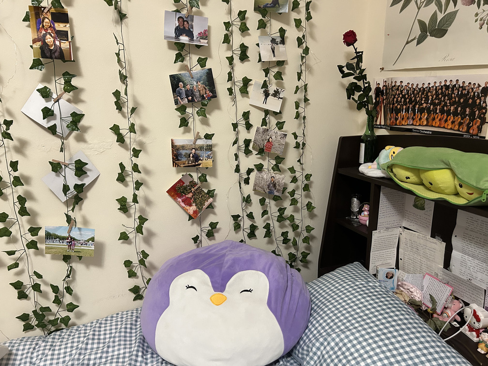

In this part, I took photographs in different locations with a projective transform between them. In other words, I did my best to keep the center of projection stable and rotate my camera.
Starting far away: Davies Hall in San Francisco at night after a symphony concert!
Almost home! Here are some scenes of the 7-11 on Telegraph Ave late at night

Now, we’re home: my corner of sentimental pictures, memories, and trinkets
Part 2: Recover Homographies
In Part 2, I implemented the computeH(im1_pts, im2_pts) function. im1_pts and im2_pts represent the n point correspondences and their (x, y) coordinate locations, and the goal of the function is to recover the 3x3 homography matrix H.
To do this, I set up a linear system of n equations to solve for the 8 unknown entries of the homography matrix (not including the guaranteed 1 in the bottom-right corner). In my mosaic calculations later in the project, I computed 6 point correspondences to ensure an overdetermined system, making the calculation more stable.
To select these point correspondences (marked in red on the diagram), I tried to isolate corners and features such as the corner of a window, the corner of a poster, the base of a tree, and a divot of the statue.
selected coordinates
matrix equation
calculated homography
For the road and 7-11 image, I attempted to select features like the corner of the sign, a car tire, the top of the parking meter, etc.
selected coordinates
matrix equation
calculated homography
The point correspondences I chose for this image were corners of photos, corners between the pillow and shelf, and specific decorations.
selected coordinates
matrix equation
calculated homography
Part 3: Warp the Images
In Part 3, I implemented methods to warp images according to the homography matrix found in Part 2. Subsequently, I was able to perform image rectification on images that had a perspective transform performed on them.
Two different interpolation methods are used: nearest-neighbor interpolation and bilinear interpolation.
As seen in the following examples, bilinear interpolation results in smoother results, while nearest neighbor interpolation
results in somewhat more “pixelated” or choppy images. However, it is important to note that nearest neighbor
interpolation is generally more efficient than bilinear interpolation because bilinear interpolation requires around
4× the number of calculations as nearest neighbor; in bilinear interpolation, all 4 surrounding pixels need to be
considered instead of just rounding the pixel we are working with.
original image, from Levain Bakery in Noho, New York
warped image using nearest neighbor interpolation
warped image using bilinear interpolation -- much smoother than NN interpolation
original image, photobooth in Cupertino with my friends :)
warped image using nearest neighbor interpolation
warped image using bilinear interpolation -- smoother!
Part 4: Blend the Images into a Mosaic
In this part, I combine the previous parts to create a mosaic of the images stitched together. I use the warping mechanism from before to warp the first image and stitch it with the original second image (left unwarped).
original image 1 of Davies
original image 2 of Davies
combined Davies mosaic!
original image 1 of the 7-11 and road
original image 2 of the 7-11 and road
combined 7-11 mosaic!
original image 1 of my room
original image 2 of my room
combined room mosaic!
Removing Edge Artifacts
To reduce the sharpness of edges caused by just overwriting one picture with the other, I use weighted averaging to blend the images. To implement this, I introduced an alpha channel to the pixels to control the weight (essentially the transparency) in the average. The alpha channel is set deterministically; it is 1 at the center of the image and falls off linearly until hitting 0 at the edges.
naive stitching, with overwriting
stitching with weighted average blending
While changes may look subtle, we can clearly see the abrupt seam in the middle of the windows at the top of the building. Blending smooths this seam and makes the image look more cohesive. However, this does cause some blurring of the middle of the image. This can be caused by the imprecise selection of point correspondences and imperfect center of projection, which we do not need to worry about with naive stitching.
naive stitching, with overwriting
stitching with weighted average blending
To see how blending improved the mosaic, focus on the seam in the sky to the right of the 7-11 sign. The blended version removes the abrupt edge and attempts to smooth out the changes in sky color.
naive stitching, with overwriting
stitching with weighted average blending
The seam that blending improved here can be seen in the middle of the poster with flowers at the top right of the image. After blending, this seam is barely visible.